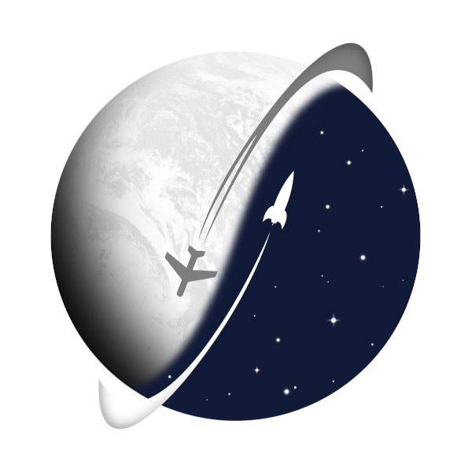
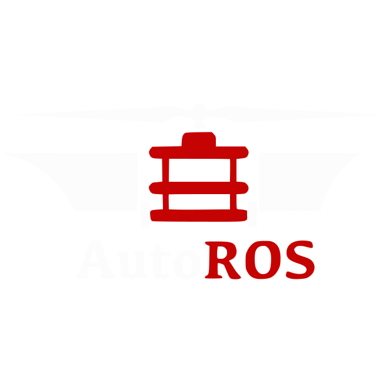
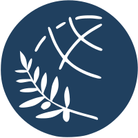
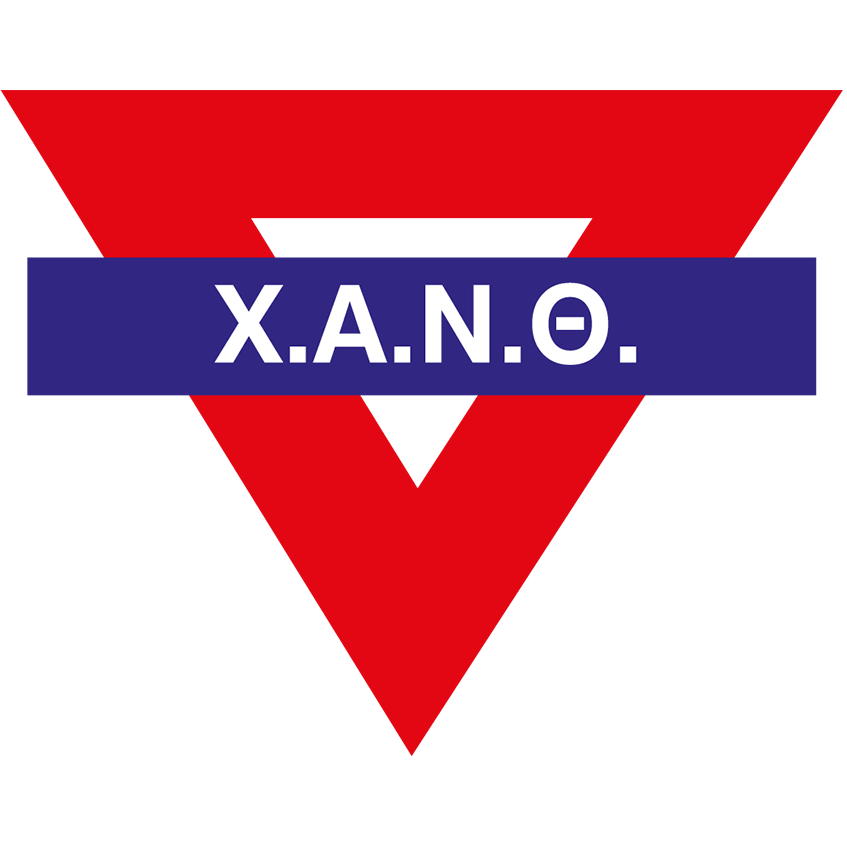
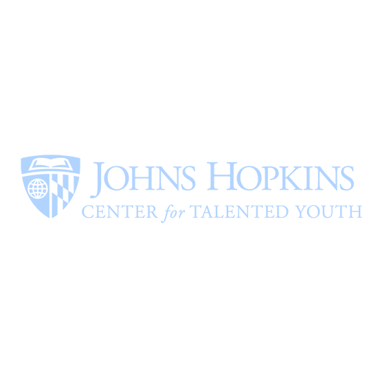
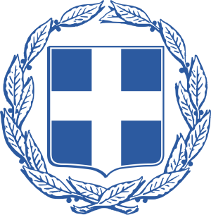

Aster's space
Doświadczenie zawodowe
Stażysta w Dziale Technicznym – Lancom
Ltd. (Lis. 2022 – Obecnie)
* Zarządzanie i utrzymywanie kilku serwerów Linux i Windows, w tym konfigurowanie usług,
takich jak DNS, serwery WWW, poczta internetowa, panele hostingowe oraz monitorowanie,
zarówno na serwerze „bare-metal”, jak i na Docker i Kubernetes
* Konfigurowanie powszechnych konfiguracji sieciowych, takich jak VPN, systemy równoważnego
obciążenia i serwery proxy
* Udzielanie wsparcia technicznego klientom
* Pisanie dobrej dokumentacji technicznej
Administrator Systemu – Aristotle Space & Aeronautics
Team (Sty. 2021 – Mar. 2022)
* Utrzymywanie usług z wysoką wydajnością i niezawodnością (>99,85% czasu nieprzerwanego
działania)
* Instalowanie i regularne aktualizowanie wszystkich narzędzi SaaS, które należały do zespołu
* Zarządzanie i zabezpieczanie szeregów serwerów Linux i środowisk komputerowych, w tym usług
takich jak Apache2, Nginx, MySQL, OpenLDAP
* Zapewnienie szybkiego wsparcia IT
* Pisanie dokumentacji IT dla przyszłych SysAdminów
Inżynier Awioniki - Aristotle Space & Aeronautics
Team (Lis. 2019 – Mar. 2021)
* Badania naukowe nad sensorami oraz ich programowanie w C++
* Projektowanie i montaż czujników
* Badania i wdrażanie systemu autopilota
* Rozwój oprogramowania narzędzi obliczeniowych
* Pisanie dokumentacji dotyczącej rozwoju projektu oraz tworzenie i utrzymywanie systemu
klasyfikacji dokumentów
Inżynier Pojazdów Autonomicznych - AutoROS
Team (Paź 2019 – Lip. 2020)
* Rozwój oprogramowania opartego na ROS w C++ i Pythonie
* Badanie naukowego nad sensorami oraz ich programowanie
* Konserwacja robotów
* Stworzenie instrukcji ROS dla przyszłych członków zespołu
* Tworzenie i utrzymywanie dokumentów QoL dla zespołu
Edukacja
Inżynieria Automatyki – IHU
* Stosowanie naukowych i technologicznych metod projektowania, opracowywania budowy i
ekspoatacji i eksploatacji maszyn elektrycznych, elektronicznych, komputerowych, hydraulicznych
i pneumatycznych oraz ich automatyki, a także opracowywanie lub nadzorowanie opracowań dla
projektów w tym zakresie.
* Wykonywanie ocen i przeglądów projektów należących do systemów zawierających elementy
automatyki oraz ekspertyz instalacji wyżej wymienionych systemów
* Używanie, programowanie, konserwacja, regulacja i adaptacja komputerów, mikrokomputerów,
mikrokontrolerów, sterowników PLC, CNC, urządzeń robotycznych i ogólnego sprzętu wdrażającego
metody i algorytmy automatycznego sterowania
Tytuł pracy inżynierskiej: Pomiary rozpraszania z zastosowanie mikrokomputera Beaglebone dla
przenośnych czujników biomedycznych
[Details]
Licencje, certyfikaty i nagrody
Dyplom przywództwa młodzieżowego YMCA (2016-)
* Wydawany przez YMCA w Salonikach za pomyślne ukończenie czteroletniego kursu szkoleniowego w
zakresie przywództwa
CTY Greece Talent Search Award (2013-)
* Wydany przez Anatolia College w Salonikach w imieniu Centrum Utalentowanej Młodzieży
Uniwersytetu Johnsa Hopkinsa za wyróżniające się umiejętności werbalne i matematyczne oraz za
bycie jednym z uczestników o najwyższych wynikach w latach 2013–2015
 Certificate of Competency in
English (ECCE) (2012-)
Certificate of Competency in
English (ECCE) (2012-)
* Wydawany przez Uniwersytet w Michigan jako oficjalne poświadczenie znajomości języka
angielskiego
Język angielski jest moim drugim językiem rodzimym, a certyfikat ten został przeze mnie zdobyty
przede wszystkim po to, aby posiadać oficjalne poświadczenie tego.
Wolontariat
Lokalna Komisja Organizacyjna -
1. Bałkańska Olimpiada Fizyczna (Lip. 2019)
Pomoc Bałkańskiej Unii Fizycznej i Greckiemu Towarzystwu Fizycznemu w organizacji 1. Bałkańskiej
Olimpiady Fizycznej
Mediator Uczniowski
Dołączenie do studenckiego zespołu mediacyjnego w moim liceum oraz pomoc zarówno pojedynczym
uczniom, jak i grupom uczniów w rozwiązywaniu sporów, jako mediator uczniowski
Publikacje
Praca inżynierska
* Pomiary rozpraszania z zastosowanie mikrokomputera Beaglebone dla przenośnych czujników biomedycznych (Link TBA)Artykuły naukowe
* Fabrication and Development of an Optical Biomedical Sensor, A. Bantis, M. Michailidou, E. Gkagkanis, K. Karakostas and M. E. Kiziroglou (21WOM-05)* From Microtechnology to Nanotechnology, D. Bagdatoglou, N. Balp, A. Bantis, R. Beal, Y. Carmichael, C. I. Danaskou, K. Georgiadis, M. Michailidou, A. Nikolopoulos, S. Ntemkas, D. Parastatidou, V. Petitjean, H. Schaefer and N. Traikoudis (20WOM-04)
Języki
* Nowogrecki (rodzimy)* Angielski (rodzimy)
* Polski (A2)
* Francuski (A2)
Umiejętności
C, C++, GNU/Linux, BASH, PHP, SQL, PLC Programming (LD, FBD, ST), BASIC, AVR Assembly, ARM Assembly, HTML/CSS, LaTeX, ROS, Docker, Kubernetes, AutoCAD, SolidworksElektrotechnika, Inżynieria Systemów Wbudowanych, Programowanie, Bazy Danych, Elektronika, Pojazdy Autonomiczne, Projektowanie Wspomagane Komputerowo, Automatyka, Systemy Sterowania, Administracja Systemem GNU/Linux, Mikrosystemy, Operacje IT, Sieci
Pracowitość, Praca Zespołowa, Ciekawość, Komunikacja Pisemna, Odpowiedzialność, Rozwiązywanie Problemów, Kreatywność, Wielozadaniowość
Ostatnia aktualizacja: 2023-01-02